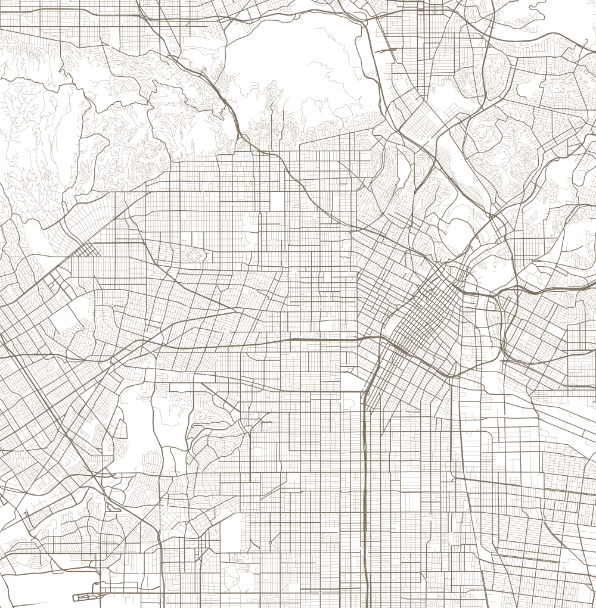
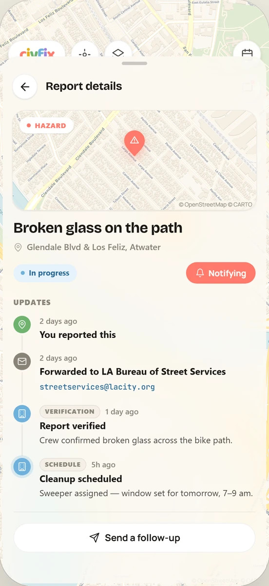
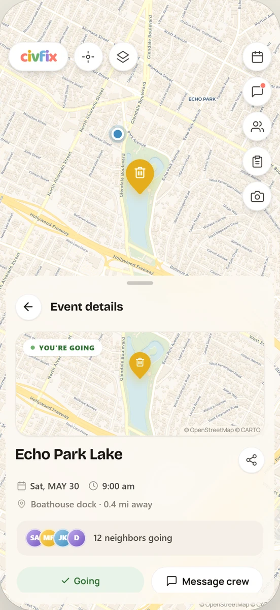

Report it
Take a photo or short video. The app tags the exact spot and you pick the issue: illegal dumping, graffiti, a pothole or broken sidewalk, a broken streetlight or flooding, overgrown brush, or something else.
Our resident reporting and volunteer hub.
See a problem, like an illegally dumped couch, graffiti, a pothole or a streetlight that never came back on? Drop a pin and snap a photo. Civfix works out which agency is responsible and forwards your report, so you don’t have to know who to call.
The same map shows what neighbors have reported and which cleanups are happening nearby, so Civfix is equal parts report the problem and help fix it.
Take a photo or short video. The app tags the exact spot and you pick the issue: illegal dumping, graffiti, a pothole or broken sidewalk, a broken streetlight or flooding, overgrown brush, or something else.
Civfix works out which agency is responsible from where your pin is, forwards the report, and lets you track it and follow up.

Anyone can host a cleanup. Neighbors RSVP, see who’s going and what to bring, and coordinate in a group chat right in the app.
Follow organizers and neighbors, message people directly, and keep up with a feed of what’s happening in your neighborhood.

Photo or video, automatic location, and an issue type, routed to the right agency.

A live status timeline: submitted → forwarded to LA Bureau of Street Services → verified → cleanup scheduled.

Join or host a cleanup: RSVP, who’s going, what to bring, and a built-in group chat.
Report what you see, or round up a few neighbors and host a cleanup. Civfix is a program of Reach Out Los Angeles, a 501(c)(3) nonprofit.